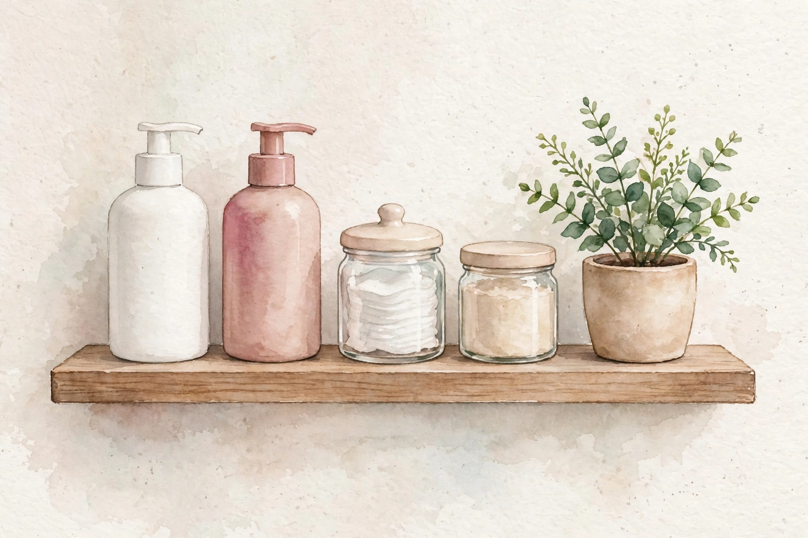

浴室・洗面所の棚の整理と並べ方

浴室の棚に、ボトルが何本並んでいますか。施術の現場では、使う順番に道具を並べることが仕事の基本です。家庭の浴室も、並べ方の工夫ひとつで、毎日の洗髪の段取りが変わります。この記事では、棚の整理の考え方を整理します。
並べ方は「使う順番」が基本
棚の並べ方は、使う順番に合わせるのが基本です。シャンプー、トリートメント、アウトバスのアイテムという流れに沿って並べると、入浴中の動きが少なくなります。家族と共有する場合は、共有のものと個人のものを段で分ける、場所で分ける、といった区切りがあると取り違えが減ります。
使う頻度の低いアイテムは、棚の奥や別の場所へ。毎日使うものだけが手前に並んでいる状態が、理想的な形です。ボトルの向きをそろえると表示が見やすくなり、暗い浴室でも間違いが減ります。
水はけと、置き場所の環境
浴室は湿気と水はねの多い場所です。ボトルの底に水がたまる置き方をしていると、容器の外側がぬめりやすくなります。水はけのよいラックを使う、置く場所を定期的に拭く、といった小さな手入れが、棚全体の清潔を保ちます。保管場所の考え方は、ボディケアの保管についての記事とも共通します。
詰め替え用は、浴室ではなく洗面所や棚の乾いた場所に保管し、使うときに補充する流れにすると管理がしやすくなります。開封した日をマスキングテープに書いて貼っておく方法は、現場でも使う記録の工夫です。
見直しは「季節の変わり目」に
棚の見直しは、季節の変わり目がおすすめです。残量の確認、長く開封したままのもののチェック、使い切る順番の組み直し。この小さな棚卸しをしておくと、買い過ぎや、似たアイテムの重複に気づけます。
整理の目的は、きれいに見せることではなく、毎日の手順を迷いなくすることです。使う順番に並び、残量が見える。それだけで、洗髪の段取りはかなり整います。まずは今夜、棚のボトルを使う順番に並べ替えることから始めてみてください。
棚の整理で意外と大切なのが、ボトルの表示が見える向きです。家族が使う浴室では、似た形のボトルが並ぶと取り違えが起こります。表示を手前に向ける、色の違うキャップのものを選ぶ、置く段を人ごとに決める。こうした小さな工夫が、毎日の間違いを防ぎます。
洗面所側には、アウトバスのアイテムやスタイリング剤など、入浴後に使うものを置くのが動線に合います。浴室と洗面所で「使う場所に置く」を徹底すると、物の移動が減り、置き忘れも減ります。場所と物の対応を決めることが、整理の本質です。きれいに並べることより、迷わず手が伸びる状態を目指してください。
棚の整理は、家族の人数や浴室の広さで、正解の形が変わります。大切なのは見た目のきれいさではなく、使う人の動線に合っているかどうかです。子どもの手の届く場所に置くもの、大人だけが使うものを分けるなど、安全面の区切りも、家族の浴室では大切な観点です。また、ボトルの詰め替えのタイミングで、容器の口まわりを洗う習慣をつけると、棚全体の清潔が保ちやすくなります。詰め替えは、容器の手入れの機会でもあります。整理と手入れをセットにすると、棚の状態は安定します。
棚の整理が進むと、買い物の判断も変わります。今あるものの残量と種類が見えていると、似たアイテムを重ねて買うことが減ります。整理は、家計の管理にもつながる習慣です。
整理を始める場所は、毎日使う段からがおすすめです。全部を一度に変える必要はありません。1段ずつ、使う順番に整えていく。小さな範囲から始めることが、整理を続けるコツです。
セラフィナ「棚は使う順番に並べるのが基本。残量が見えると、買い物の失敗も減るね」